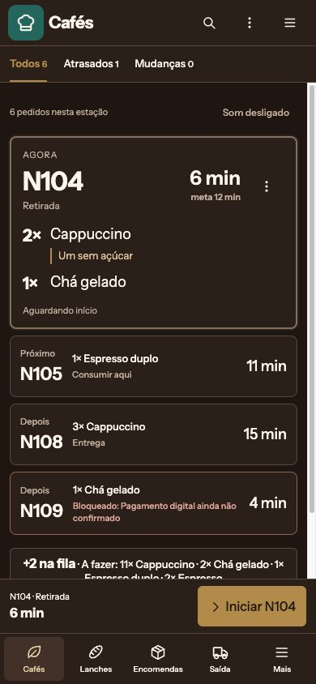
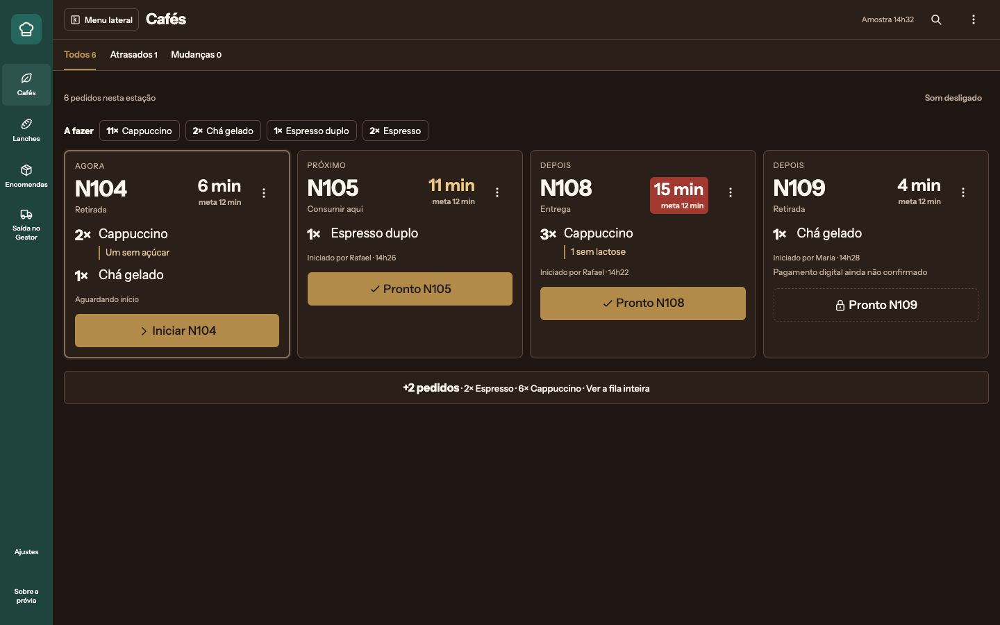
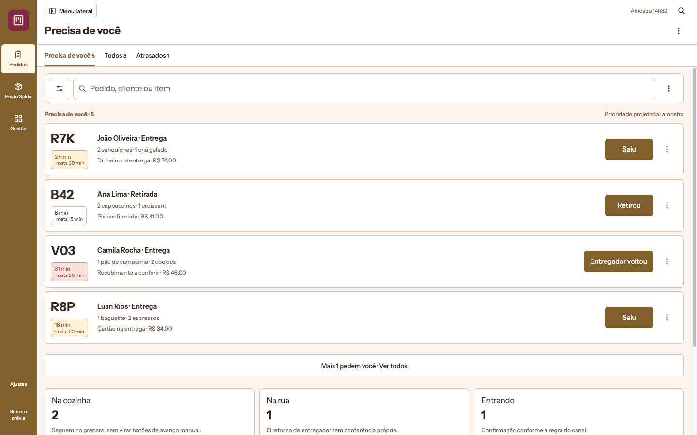
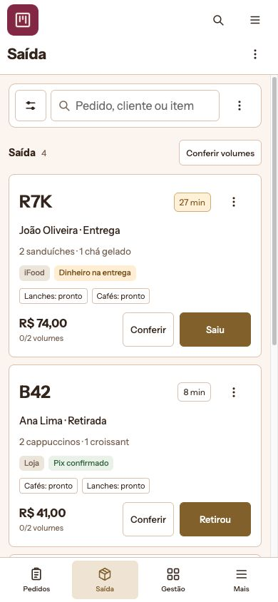
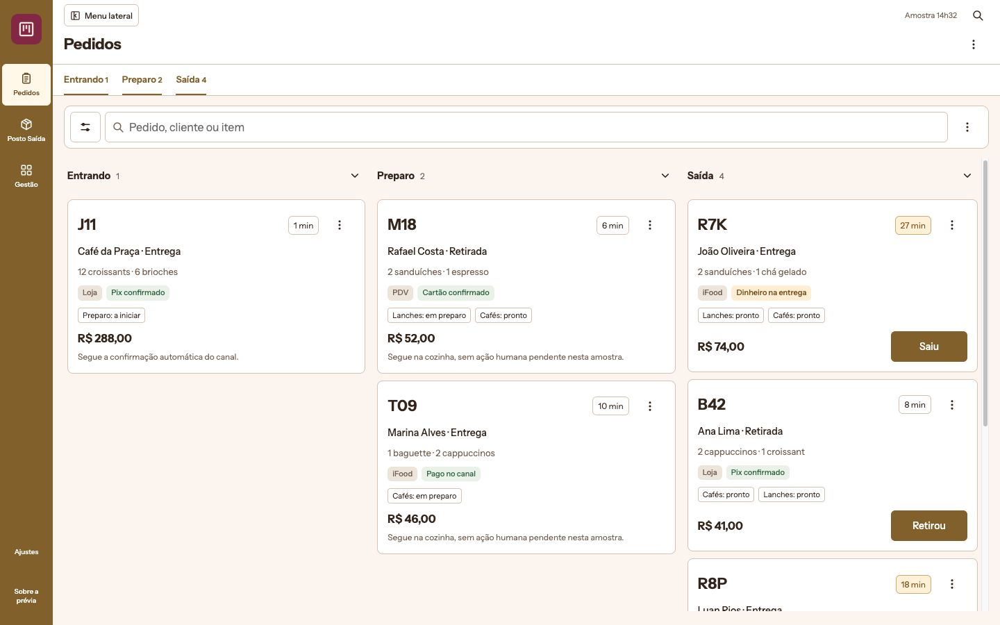

Nova rodada · Reconstruções de composição por tarefa · Sem implementação nos apps
Três postos de trabalho, três composições
As prévias partem das anatomias existentes: comanda e lançamento no PDV; foco e execução na Cozinha; atenção humana, etapas e expedição no Gestor. São dados fictícios, sem APIs ou efeitos reais.
Como abrir no celular
Os links abaixo abrem só a tela proposta. O ícone do app abre a troca de apps; o ☰ abre a navegação interna. As tabs rolam horizontalmente e têm suporte a setas/Home/End no teclado. As imagens desktop podem ser ampliadas no celular.
As prévias são reconstruções estáticas de composição, não capturas do runtime atual nem substitutos integrais de seus componentes. Recarregar restaura as amostras. Não usar a rodada transversal genérica anterior para aprovar os interiores operacionais.
PDV
A comanda organiza o atendimento. Quadro antes da venda, produtos como alvos diretos e a lista de itens sempre no espaço de trabalho apropriado ao dispositivo.
- Desktop: comanda de altura inteira à direita, largura ajustável independentemente da navegação.
- Mobile/tablet: folha recolhida com total/cozinha; aberta com linhas, seleção e numérico apenas quando editar.
- Envio, observação de item já enviado e transferência com origem/destino identificados.
- Pagamento inteiro, misto, Pix aguardando e resultado com troco congelado.

KDS / Cozinha
O operador precisa perceber o que preparar agora, o que mudou e qual ato está permitido. A composição preserva uma hierarquia de atenção.
Preservado nesta composição
- Estações da casa, com Saída no Gestor.
- Mobile: Agora completo, Próximo/Depois compactos e +N para a fila inteira.
- A fazer agrega a fila da estação, inclusive o restante.
- Iniciar/Pronto com código do pedido; proteção de 900 ms após iniciar.
- Desfazer durante 5 segundos no mesmo botão e lugar.
- Mudança/cancelamento exigem ciência; bloqueio tem motivo explícito.
- Identidade escura, densidade e navegação de apoio.
Experimente como operador
- Em N104, Iniciar. Pronto fica temporariamente desarmado para evitar rebote.
- Marque Pronto e use Desfazer no mesmo botão. Depois deixe os 5 segundos transcorrerem e abra o Histórico.
- Toque na linha de N109: a conclusão está bloqueada por pagamento, com o motivo à vista.
- Em ⋮ → Cenários para revisar, injete observação nova ou cancelamento. A ação passa a ser Visto/Recebi cancelamento.
- Expanda +N, busque chá sem acento e alterne a estação.
- Swipe de uma linha para Pronto só é aceito quando o estado permite. Toque longo abre o menu; as opções também têm botão visível.
Ajustes candidatos e limites do KDS
Navegação compacta sem segunda lateral permanente. Busca da estação por diálogo no mobile para preservar área da fila. Controles que não executam preparo ficam no menu. A ação fixa mantém código e tempo do ticket em foco.
Não há áudio, push, vibração ou dados ao vivo. A simulação não reproduz API, idempotência, wake lock, permissões ou todas as formas de adição/receita. Os tempos de SLA são rótulos fictícios, não um motor novo de prioridade. Toque/swipe reais ainda exigem dispositivo físico.
Fontes: pages/[ref].vue, KdsPhoneQueue.vue, KdsTicketCard.vue, KdsAllDayStrip.vue, KdsStationControls.vue, KdsHoldSheet.vue, KdsHistoryDialog.vue e presentation/board.ts/sections.ts.




Gestor operacional
Supervisão, operação por etapas, consulta densa e posto de Saída não são a mesma tarefa. A prévia mantém composições distintas para cada uma.
Preservado nesta composição
- Desktop: Precisa de você com quatro em foco, restante resumido e o que segue sozinho.
- Quadro desktop com divisórias ajustáveis e colunas recolhíveis; mobile/tablet em pé com uma etapa por tab.
- Lista compacta com paginação, recortes e seleção de alvos.
- Somente o fato humano vira ação. Pedido que segue confirmação automática não recebe um falso Avançar.
- Saída com alvo de toque maior, volumes, retirada, despacho e retorno de entregador.
- Conferência de volumes avisa; não inventa um bloqueio de retirada.
- Erro/aviso no topo e revisão com pedido, entregador e valores identificados.
Experimente como operador
- Na Saída, abra Conferir em B42 e use M18:1/2. O alerta oferece Conferir M18 ou Seguir B42.
- Continue em B42. Retirou continua disponível mesmo sem todas as sacolas conferidas.
- Em R7K, Saiu abre despacho. Informe entregador, troco e maquininha; confira a leitura de volta antes de confirmar.
- Na supervisão desktop, abra V03 → Entregador voltou. Experimente Conferido e Voltou diferente.
- Na Fila, Selecionar leva à Lista para marcar alvos; responsável e impressão declaram os pedidos atingidos.
- Desktop: ajuste uma divisória das colunas e recolha uma coluna. As tabs permitem restaurá-la. Mobile: as mesmas tabs trocam a etapa mostrada.
Ajustes candidatos e limites do Gestor
Busca em card rolável permanece no conteúdo. No Gestor, as reticências continuam na extremidade da linha do título, abaixo das utilidades. Reticências e fechar são discretos. A navegação do app, a largura das colunas e a visão dos pedidos têm controles com alcances diferentes.
A supervisão Fila é desktop/tablet deitado. O celular abre Quadro ou Lista, sem comprimir a visão desktop. Posto de Saída tem contexto próprio; trocar para supervisão é uma decisão explícita.
Na Saída, valor e quantidade de volumes acompanham Conferir e Saiu/Retirou na mesma linha. Mantêm-se os alvos de 48 px, com menos uma faixa de controles.
As actions, a prioridade, os tempos e os estados usam fixtures. Não há despacho real, ajuste de caixa, impressão, fiscal, negociação iFood, permissões ou concorrência. Esses painéis específicos continuam no app existente. A lista de gestão de catálogo/clientes anterior permanece apenas como proposta de navegação; seu interior não está autorizado a substituir os componentes maduros.
Fontes: pages/index.vue, QueueView.vue, OrderBoardColumn.vue, OrderCard.vue, BoardMenu.vue, DispatchDialog.vue, CourierBackDialog.vue, VolumeCheckBar.vue e presentation/queue.ts/board.ts.





Escopo da aprovação
Julgar composição e percursos demonstrados, sem assumir equivalência funcional integral. Aprovar uma tela não autoriza substituir regras, forms maduros ou capacidades ausentes da amostra.
Somente prévias estáticas. Core, orquestrador, projections, apps Nuxt e deploy intactos.